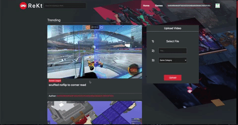

February-March 2021
A decentralized application where users can upload and view their favorite gaming moments on the blockchain.
Web3 Solidity IPFS Infura React Redux Sass
• Connected Metamask wallet to React front-end using Web3, allowing users to sign transactions with test Ethereum on the Ropsten Test Network.
• Wrote and deployed smart contract in Solidity onto the Ethereum Ropsten Test Network that handles the uploading of moments to the blockchain, separates them into different categories, and handles the storage of moments in users' accounts.
• Stored all videos on IPFS, a decentralized storage network that converts videos into unique hashes, allowing the smart contract to only store a hash which we can use to retrieve our moments.
• Utilized Infura to easily handle API access to Ethereum and IPFS.
In the past few months, I have become increasingly involved in the blockchain space. I joined Decentology in September 2020 which confirmed my investment in the industry. Ever since joining the team, I have served as the lead Cadence developer, which is the smart contract language for the Flow blockchain.
As I grew as a blockchain developer, I know I wanted to learn Solidity, the smart contract language for Ethereum. I also wanted to get introduced to Web3, IPFS, and Infura, which are all essential tools to dApp development. Fortunately, I had the idea to tie this to the endless amounts of video games that I play. My friends and I wanted to have a place to showcase our gaming moments, and I thought it would be cool to introduce them to blockchain in the process. The result was ReKt.
On ReKt, you can upload your gaming moment by selecting the game, adding a name, and confirming a transaction. This all happens on the Ropsten Test Network, which is perfect for dApps like these because it doesn't require actual money. After uploading, your moment if forever stored on IPFS, which the program uses to store all the moments.
You can view all recently uploaded videos on the Home page, view your moments by clicking on your profile icon, view other's moments by clicking on their address under each moment, or search moments by category under the Games tab. Additionally, you can find your blockchain address in the navigation bar at the top. If you have any awesome gaming moments (or any that you're proud of), be sure to upload them so everyone can enjoy it!
In order to be able to use the ReKt application at rekt.netlify.app, there are a few steps you need to take first. These are listed here:
1) Install MetaMask on a browser of your choice that supports it.
2) Setup your wallet in MetaMask.
3) Select "Ropsten Test Network" under the Networks tab at the top of your MetaMask google chrome extension.
4) Refresh the page and enjoy!
Note: In order to get test Ethereum into your MetaMask wallet on the Ropsten Test Network so you can sign transactions and upload videos onto the blockchain, Go to the Ropsten Faucet, copy and paste your MetaMask address into the text input, and hit "Send me Test Ether."